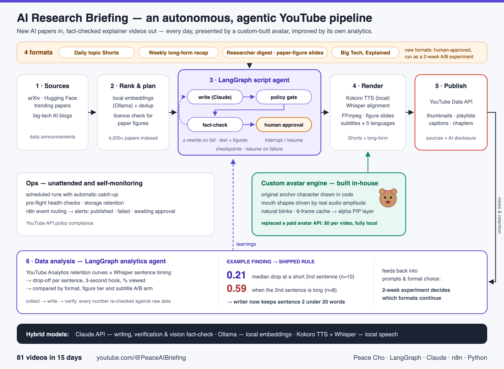

New AI papers in, fact-checked explainer videos out every day, presented by a custom-built avatar and improved by its own analytics.

Click the diagram to open it full size.
Trending AI papers (arXiv, Hugging Face) and big-tech AI announcements, collected daily.
Local embeddings rank and de-duplicate papers; paper figures are used only when their licence allows it.
Write → policy gate → fact-check against text and figures, with a rewrite loop on failure, checkpoints, and human approval for new formats.
Local text-to-speech, Whisper alignment, figure slides and subtitles in five languages, with the in-house avatar layered on top.
YouTube Data API: video, thumbnail, playlist, captions and chapters, with sources and an AI-assistance note in every description.
Retention per sentence, 3-second hook and format comparisons; every number is re-checked against the raw data, and findings become writing rules.